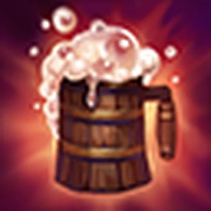
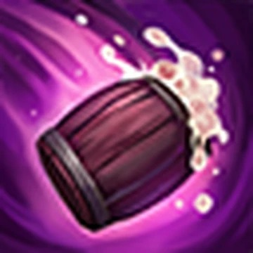
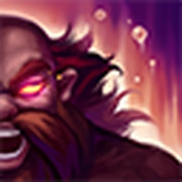
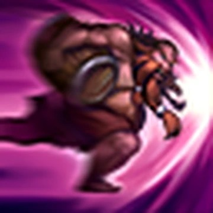
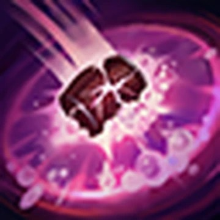

Gragas
Igualmente alegre e imponente, Gragas é um gigante e arruaceiro mestre-cervejeiro em uma busca pessoal pelo mais perfeito caneco de cerveja. Vindo de partes desconhecidas, ele busca por ingredientes raros entre a vastidão intocada de Freljord, testando cada receita enquanto segue seu caminho. Frequente embriagado e extremamente impulsivo, ele é lendário pelas lutas de bar que começa, que quase sempre acabam em festas que duram a noite toda e em muitos danos de propriedade. Qualquer aparição de Gragas certamente será seguida de bebidas e destruição, nessa ordem.
Splash Art do campeão:
Habilidades do campeão:
    Para retornar para a página principal clique aqui!